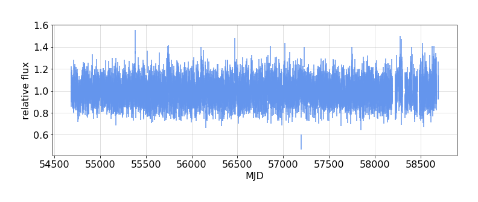
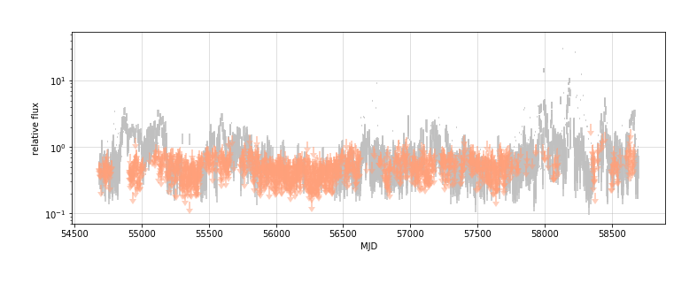

---

title: The `light_curve` package


keywords: fastai
sidebar: home_sidebar

summary: "Code for generating fermi-LAT light curves"
description: "Code for generating fermi-LAT light curves"
nb_path: "nbs/index.ipynb"
---
<!--

#################################################
### THIS FILE WAS AUTOGENERATED! DO NOT EDIT! ###
#################################################
# file to edit: nbs/index.ipynb
# command to build the docs after a change: nbdev_build_docs

-->

<div class="container" id="notebook-container">
        
    {% raw %}
    
<div class="cell border-box-sizing code_cell rendered">

</div>
    {% endraw %}

<div class="cell border-box-sizing text_cell rendered"><div class="inner_cell">
<div class="text_cell_render border-box-sizing rendered_html">
<h2 id="Background">Background<a class="anchor-link" href="#Background"> </a></h2><p>This package has code that is being adapted to the <a href="https://nbdev.fast.ai/">nbdev</a> environment from <a href="https://github.com/tburnett/lat-timing">github package lat-timing</a> to manage light curves of Fermi-LAT sources.</p>
<p>An At the same time, I've ported some code from  my <a href="https://github.com/tburnett/jupydoc">jupydoc</a> documention package to allow enhanced documentation combining Markdown and code.</p>

</div>
</div>
</div>
<div class="cell border-box-sizing text_cell rendered"><div class="inner_cell">
<div class="text_cell_render border-box-sizing rendered_html">
<h2 id="Install">Install<a class="anchor-link" href="#Install"> </a></h2><p>After cloning, in its folder run the command
<code>pip install -e .</code></p>

</div>
</div>
</div>
<div class="cell border-box-sizing text_cell rendered"><div class="inner_cell">
<div class="text_cell_render border-box-sizing rendered_html">
<h2 id="Demonstrate-some-actual-light-curves">Demonstrate some actual light curves<a class="anchor-link" href="#Demonstrate-some-actual-light-curves"> </a></h2>
</div>
</div>
</div>
    {% raw %}
    
<div class="cell border-box-sizing code_cell rendered">
<details class="description">
      <summary data-open="Hide Code" data-close="Show Code"></summary>
        <summary></summary>
        <div class="input">

<div class="inner_cell">
    <div class="input_area">
<div class=" highlight hl-ipython3"><pre><span></span><span class="k">def</span> <span class="nf">plot_demo</span><span class="p">():</span>
    <span class="sd">&quot;&quot;&quot;</span>
<span class="sd">    ### Light curve plots</span>
<span class="sd">    </span>
<span class="sd">    {print_out}</span>
<span class="sd">    </span>
<span class="sd">    </span>
<span class="sd">    Test with {source1.name}:</span>
<span class="sd">    </span>
<span class="sd">    {fig1}</span>
<span class="sd">    </span>
<span class="sd">    and {source2.name}</span>
<span class="sd">    </span>
<span class="sd">    {fig2}</span>
<span class="sd">    </span>
<span class="sd"> </span>
<span class="sd">    &quot;&quot;&quot;</span>
    <span class="kn">from</span> <span class="nn">light_curves.config</span> <span class="kn">import</span> <span class="n">Config</span><span class="p">,</span> <span class="n">Files</span><span class="p">,</span> <span class="n">PointSource</span>
    <span class="kn">from</span> <span class="nn">light_curves.lightcurve</span> <span class="kn">import</span> <span class="n">get_lightcurve</span><span class="p">,</span> <span class="n">flux_plot</span>
    
    <span class="n">config</span> <span class="o">=</span> <span class="n">Config</span><span class="p">()</span>
    <span class="n">files</span> <span class="o">=</span> <span class="n">Files</span><span class="p">()</span>
    
    <span class="k">with</span> <span class="n">capture_print</span><span class="p">(</span><span class="n">summary</span><span class="o">=</span><span class="s1">&#39;printout from this analysis&#39;</span><span class="p">)</span> <span class="k">as</span> <span class="n">print_out</span><span class="p">:</span>
        <span class="n">source1</span> <span class="o">=</span> <span class="n">PointSource</span><span class="p">(</span><span class="s1">&#39;Geminga&#39;</span><span class="p">)</span>
        <span class="n">lc1</span> <span class="o">=</span> <span class="n">get_lightcurve</span><span class="p">(</span><span class="n">config</span><span class="p">,</span> <span class="n">files</span><span class="p">,</span> <span class="n">source1</span><span class="p">)</span>
        <span class="n">fig1</span> <span class="o">=</span> <span class="n">flux_plot</span><span class="p">(</span><span class="n">config</span><span class="p">,</span> <span class="n">lc1</span><span class="p">,</span> <span class="n">fignum</span><span class="o">=</span><span class="mi">1</span><span class="p">,</span> <span class="n">title</span><span class="o">=</span><span class="n">source1</span><span class="o">.</span><span class="n">name</span><span class="p">)</span>
        <span class="n">fig1</span><span class="o">.</span><span class="n">caption</span><span class="o">=</span><span class="sa">f</span><span class="s1">&#39;</span><span class="si">{</span><span class="n">source1</span><span class="o">.</span><span class="n">name</span><span class="si">}</span><span class="s1">&#39;</span>

        <span class="n">source2</span> <span class="o">=</span> <span class="n">PointSource</span><span class="p">(</span><span class="s1">&#39;3C 279&#39;</span><span class="p">)</span>
        <span class="n">lc2</span> <span class="o">=</span> <span class="n">get_lightcurve</span><span class="p">(</span><span class="n">config</span><span class="p">,</span> <span class="n">files</span><span class="p">,</span> <span class="n">source2</span><span class="p">)</span>
        <span class="n">fig2</span> <span class="o">=</span> <span class="n">flux_plot</span><span class="p">(</span><span class="n">config</span><span class="p">,</span> <span class="n">lc2</span><span class="p">,</span> <span class="n">fignum</span><span class="o">=</span><span class="mi">2</span><span class="p">,</span> <span class="n">yscale</span><span class="o">=</span><span class="s1">&#39;log&#39;</span> <span class="p">)</span>
        <span class="n">fig2</span><span class="o">.</span><span class="n">caption</span><span class="o">=</span><span class="sa">f</span><span class="s1">&#39;</span><span class="si">{</span><span class="n">source2</span><span class="o">.</span><span class="n">name</span><span class="si">}</span><span class="s1">&#39;</span>

<span class="n">nbdoc</span><span class="p">(</span><span class="n">plot_demo</span><span class="p">)</span>
</pre></div>

    </div>
</div>
</div>

    </details>
<div class="output_wrapper">
<div class="output">

<div class="output_area">


<div class="output_markdown rendered_html output_subarea ">
<h3 id="Light-curve-plots">Light curve plots<a class="anchor-link" href="#Light-curve-plots"> </a></h3><p><details ><summary> printout from this analysis </summary> <p style="margin-left: 5%"><pre>Restoring the light curve from /tmp/light_curves/Geminga_lightcurve.pkl <br>Restoring the light curve from /tmp/light_curves/3C_279_lightcurve.pkl <br></pre></p> </details></p>
<p>Test with Geminga:</p>
<div class="jupydoc_fig"><figure>     <figcaption><b>Figure 1</b>. Geminga</figcaption></figure></div><p>and 3C 279</p>
<div class="jupydoc_fig"><figure>     <figcaption><b>Figure 2</b>. 3C 279</figcaption></figure></div>
</div>

</div>

</div>
</div>

</div>
    {% endraw %}

</div>
 

